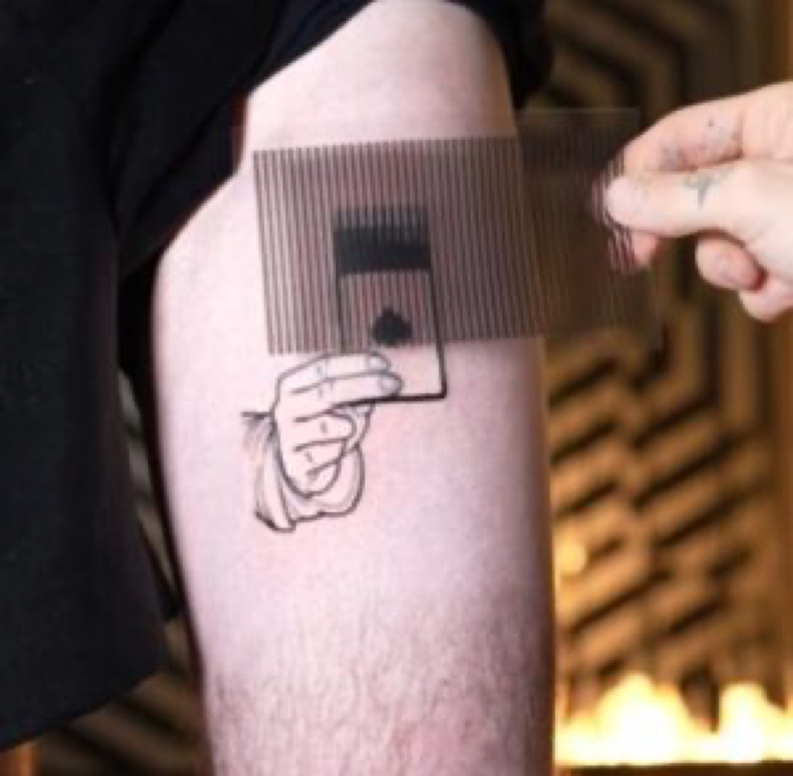
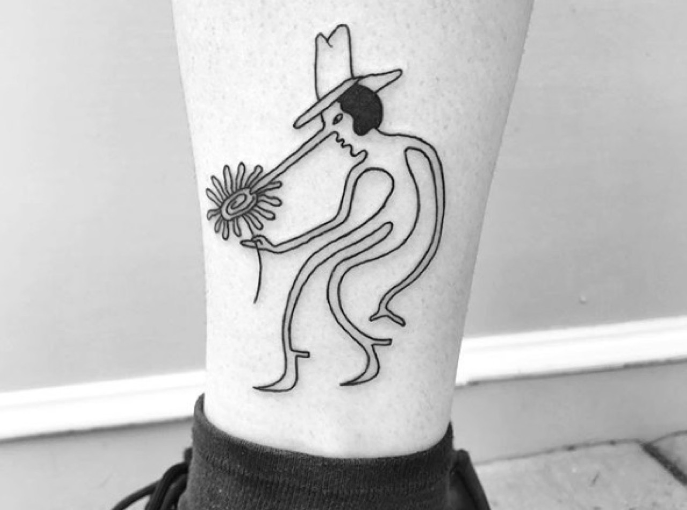

Cat Lovers Can't Get Enough of Salt Inkso's Adorable Tattoos: Feline Aesthetics in Body Art
In contemporary tattoo art and body modification practice, certain artists have gained devoted followings through specializing in adorable, minimalist feline-inspired designs that celebrate cat aesthetic and appeal to passionate feline enthusiasts. Salt Inkso exemplifies this approach, creating tattoo designs depicting cats in various styles—from realistic portraiture to abstract geometric forms to playful cartoon-inspired designs—that resonate intensely with cat-loving audiences. The artist's practice demonstrates that tattoo art capable of genuine aesthetic refinement and conceptual sophistication deserves serious recognition as legitimate artistic medium. Salt Inkso's feline-focused tattoos create community around shared aesthetic interest; followers develop loyal engagement through appreciation for consistent quality, distinctive artistic voice, and celebration of beloved animal subject matter. The work proves that tattoo art addressing specific enthusiast communities and celebrating animal appreciation constitutes valid artistic practice meriting serious attention alongside work in more traditionally valorized mediums. Salt Inkso's success suggests that contemporary audiences increasingly value artistic work celebrating specific interests and building community around shared aesthetic appreciation.
The technical achievement underlying Salt Inkso's feline tattoo artistry requires exceptional mastery of tattoo medium and sustained development of distinctive aesthetic approach. Creating successful tattoos demands understanding how designs translate onto skin, how pigment interacts with individual skin characteristics across varied skin tones, and how designs age and evolve over time. Tattoo artists must develop ability to work within particular technical constraints—needle limitations, depth considerations, color vibrancy limitations—while maintaining artistic vision. Salt Inkso presumably demonstrates exceptional understanding of feline anatomy and physiognomy; the ability to capture distinctive feline characteristics recognizably within tattoo format requires genuine skill. Additionally, the artist likely develops sophisticated understanding of composition operating at small scale; tattoo designs must function within constrained dimensions while remaining visually compelling and technically sound. The technical mastery extends across multiple design styles—realistic portraiture requiring anatomical accuracy, geometric abstract designs requiring compositional sophistication, playful cartoon styles requiring personality communication. This stylistic versatility demonstrates genuine artistic range and technical competence.

The aesthetic dimensions of Salt Inkso's feline tattoo designs merit careful examination. Rather than producing formulaic cat designs following predictable patterns, the artist presumably develops distinctive aesthetic approaches celebrating feline characteristics while maintaining recognizable artistic voice. Individual designs might emphasize particular feline qualities: alertness expressed through eye characterization, playfulness suggested through pose or composition, dignity conveyed through formal portraiture. Color palettes, compositional choices, and technical approaches presumably reflect thoughtful artistic decision-making. Some designs might employ realism emphasizing photographic accuracy, others might prioritize stylization and expressive abstraction. This tonal variation across Salt Inkso's portfolio prevents monotony while suggesting artist's evolving engagement with feline subject matter and tattoo aesthetic possibilities. The designs reward sustained looking; initial encounters communicate basic cat identification while extended engagement reveals compositional sophistication, technical refinement, and conceptual depth distinguishing meaningful work from mere novelty.
The cultural significance of animal-focused tattoo artistry extends into important territory regarding how contemporary practice celebrates aesthetic interests and builds community around shared enthusiasms. Tattoos function as visible markers of identity and aesthetic preference; choosing to permanently inscribe body with particular imagery communicates something meaningful about personal values and interests. Cat-focused tattoos enable individuals to publicly display feline enthusiasm and signal belonging to broader cat-lover community. This community dimension constitutes important aspect of Salt Inkso's cultural significance; by providing high-quality feline designs, the artist enables community members to express shared interest through their appearance. Additionally, the tattoo medium's permanence and bodily integration distinguishes it from mere merchandise or ephemeral social media expression; choosing to wear Salt Inkso's feline tattoos constitutes genuine commitment to celebrating cats and artist's aesthetic approach. This permanence and personal investment generate stronger community bonds than more casual consumption patterns would enable.
The inspiration driving Salt Inkso's sustained focus on feline tattoo design likely emerges from genuine love for cats and recognition that passionate feline enthusiasts seek high-quality tattoo options celebrating their interests. The artist presumably possesses authentic enthusiasm for cats, communicating through consistent excellence and genuine engagement with feline aesthetic possibilities. Rather than cynically exploiting cat-lover enthusiasm for commercial benefit, Salt Inkso likely produces work emerging from genuine shared passion. This authentic motivation distinguishes meaningful community-building from cynical exploitation; audiences recognize genuine enthusiasm distinct from commercial opportunism. Additionally, positive reception and loyal community engagement likely reinforce design focus; discovering that substantial audience enthusiastically supports feline-focused tattoo work presumably validates artistic choices and motivates continued development within this aesthetic territory.

The relationship between animal-focused tattoo art and broader movements toward celebrating animal appreciation and acknowledging animal-human bonds deserves consideration. Contemporary culture increasingly recognizes that genuine emotional connections characterize relationships between humans and non-human animals; cats in particular inspire passionate devotion from countless individuals. By providing beautiful tattoo options celebrating feline companions, Salt Inkso participates in broader cultural movement validating these relationships and acknowledging animal significance in human lives. The tattoos enable permanent memorialization of beloved cat companions; many individuals presumably commemorate specific cats through tattoo designs. This function—enabling lasting tribute to cherished animal companions—constitutes genuine cultural service alongside purely aesthetic dimensions. The tattoos transform cat appreciation from abstract enthusiasm into concrete embodied expression and community practice.
Discovering Salt Inkso's feline tattoo designs typically occurs through tattoo artist directories, social media platforms specializing in tattoo imagery, or recommendations within cat-lover communities. Initial exposure generates immediate appeal from audiences seeking high-quality feline designs; the distinctive aesthetic approach and consistent excellence differentiate Salt Inkso from countless other tattoo artists. However, sustained following reflects genuine appreciation for artistic voice and commitment to feline subject matter. Clients presumably return repeatedly for new designs or refer others discovering the artist through recommendations within passionate feline enthusiast communities. The artist's social media presence and portfolio documentation enables global audience engagement; individuals worldwide can appreciate work and pursue tattoo commissions despite geographic distance from the artist's physical location. This global reach demonstrates how contemporary tattoo practice transcends geographic limitations through digital documentation and remote communication.
The practical considerations involved in specialized tattoo artistry merit attention. Developing distinctive artistic voice and building devoted following requires sustained commitment and consistent excellence. Salt Inkso presumably invests significant time and effort into portfolio development, portfolio documentation, and community engagement. Additionally, specializing in particular aesthetic territory or subject matter potentially limits market reach; not all tattoo seekers desire feline designs regardless of quality. However, the passionate devotion within specialized communities frequently generates stronger loyalty and higher pricing than broader generalist approaches might achieve. Successful specialists demonstrate that deep engagement with particular aesthetic interests and community cultivation generates more sustainable artistic practice than attempting to appeal to undifferentiated mass market.
The conclusion regarding Salt Inkso's feline tattoo artistry emerges clearly: this work demonstrates that specialized tattoo practice celebrating specific aesthetic interests constitutes meaningful artistic practice generating genuine community and cultural significance. Through technical mastery, distinctive aesthetic voice, and genuine enthusiasm for feline subject matter, Salt Inkso creates tattoo designs that enable individuals to express shared passions and build community around collective interests. The work validates animal appreciation as worthy of serious aesthetic attention and demonstrates how contemporary art can serve community-building functions beyond individual aesthetic satisfaction. As tattoo art continues gaining cultural recognition as serious artistic practice and communities increasingly organize around specific aesthetic interests, artists like Salt Inkso specializing in particular aesthetic territories while maintaining genuine excellence will undoubtedly continue building devoted followings and cultural influence.